Frame Sequential (Monitor)¶
IR Emitter (IR Blaster)¶
An IR Emitter, also known as an IR Blaster, is essential for the Frame Sequential 3D method discussed in this guide.

Why do you need an IR Emitter?¶
This device is necessary to enable the use of IR (Infrared) 3D Glasses for viewing 3D content on compatible screens.
What parts do you need?¶
To build your IR Emitter, you will need some basic electronic components: an Arduino board, a breadboard, an IR LED, wires, and a resistor.
Below are some affiliate links to Amazon products that can be used for this project. Please select one item from each category.
- Arduino or Compatible Boards:
Arduino UNO: https://amzn.to/3DfaJ6a
KEYESTUDIO Leonardo: https://amzn.to/3ZBlFT7
- Breadboard Kits with Cables:
Option One: https://amzn.to/3ZUcfU6
Option Two: https://amzn.to/49FLxSd
- Resistors - 220 Ohms:
Option One: https://amzn.to/3ZD3QmG
Option Two: https://amzn.to/4geNrMf
- IR LEDs:
Option One: https://amzn.to/3ZUcfU6
Option Two: https://amzn.to/3VGQRzd
Option Three: https://amzn.to/3DmpvrJ
- 3D Glasses:
144Hz Rechargeable DLP Glasses: https://amzn.to/41ElhWu
XPAND X105-IR-X1 Rechargeable 3D Infrared Glasses: https://amzn.to/49I7Ref
Note
When choosing 3D glasses, pay close attention to their polarization:
Vertically Polarized Glasses: These will block the image on your screen if your monitor is in portrait mode.
Horizontally Polarized Glasses: These will block the image on your screen if your monitor is in the normal landscape (horizontal) position.
If you choose the Arduino UNO, you will also need a USB B cable.
- Extra Items (USB Cables):
3 Foot USB A to USB B Cable: https://amzn.to/3OXlwnQ
6.6 Foot USB B to USB C Cable: https://amzn.to/3OYQMTz
Important
Understanding the polarization of your 3D glasses is crucial for screen compatibility. For example, if you plan to play 3D pinball games, which often use vertically oriented screens, you would typically need horizontally polarized glasses.
Warning
Screen polarization can vary. It's possible that your chosen 3D glasses may not work with certain screens due to conflicting polarization directions. In such cases, you may need to acquire glasses with the opposite polarization.
Note
While some older 3D screens have built-in IR emitters, this guide focuses exclusively on setting up new screens for 3D viewing.
Wiring¶
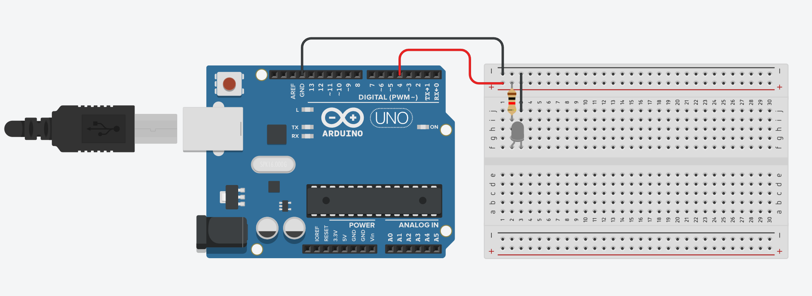
Refer to the wiring diagram above. We have designed this setup to be as straightforward as possible.
Connect the Red Wire from Digital Port 4 on the Arduino to the Red Lane (positive rail) on the breadboard.
Connect the Black Wire from the Ground Port on the Arduino to the Black Lane (negative rail) on the breadboard.
Note
Resistors are non-polarized components, meaning their orientation does not matter. Place the 220 Ohm Resistor between the Red Lane and Column 2 on the breadboard.
Note
LEDs are polarized components, meaning they have a specific orientation. Place the IR LED with its leads in Column 2 and Column 3, across either Row F or Row G.
Finally, use a smaller wire to connect the Black Lane to Column 3 on the breadboard.
LED Polarization: Additional Information¶
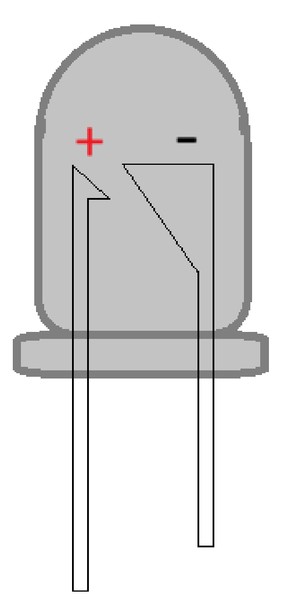
Typically, the longer ‘leg’ or pin of an LED indicates the ANODE (+) Positive terminal. If the leads have been trimmed, look for a flat edge on the LED casing, which marks the CATHODE (-) Negative terminal.
Warning
Incorrectly wiring the IR LED can cause it to "pop" and be destroyed. Always ensure correct polarization.
Additionally, improper wiring can damage the ports on your Arduino board.
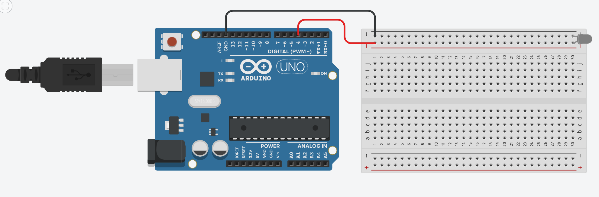
Always heed these warnings to prevent damage to your components.
Setting up the board¶
With the wiring complete, it’s time to prepare the software. Begin by plugging in your Arduino board to your computer.
Download the Arduino IDE
First, you need to install the Arduino Integrated Development Environment (IDE) and its drivers. This software is essential for programming your Arduino board.
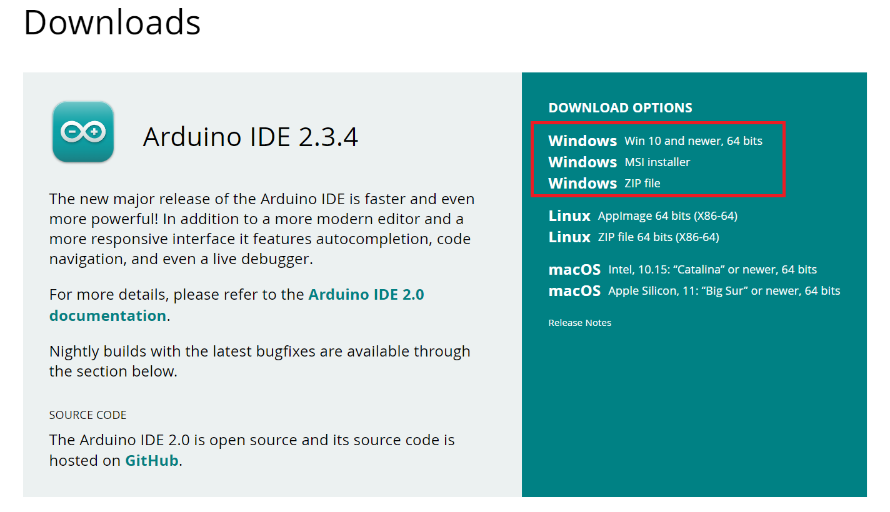
Run the Installer
Execute the downloaded installer file.
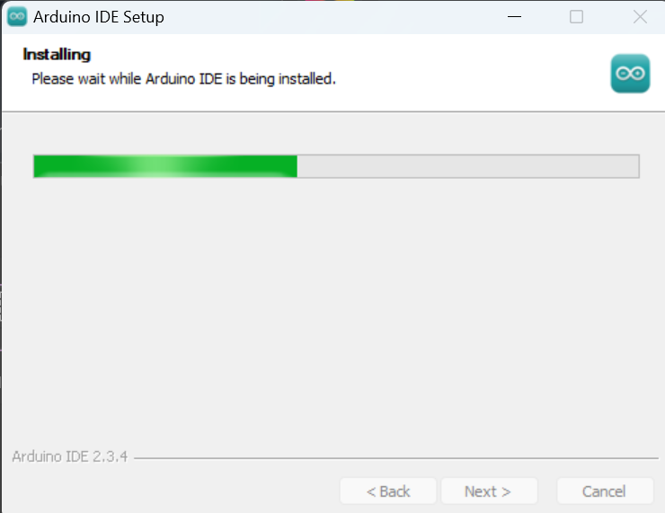
Install Drivers
During the installation, you will be prompted to install necessary drivers. Agree to these prompts; they are safe.
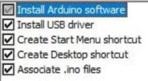
You may see several pop-up windows; please accept them to ensure proper driver installation.¶
Start the Arduino IDE
Once the installation is complete, launch the Arduino IDE.
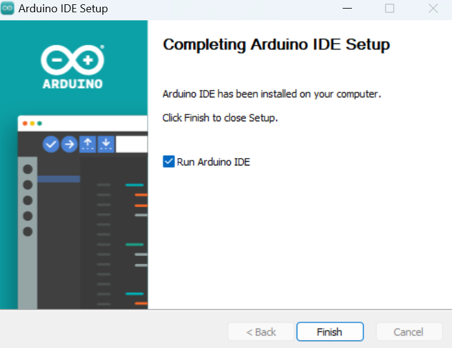
Configure the Board in the IDE
You will need to select your specific Arduino board and the correct communication port (COM Port) within the IDE.
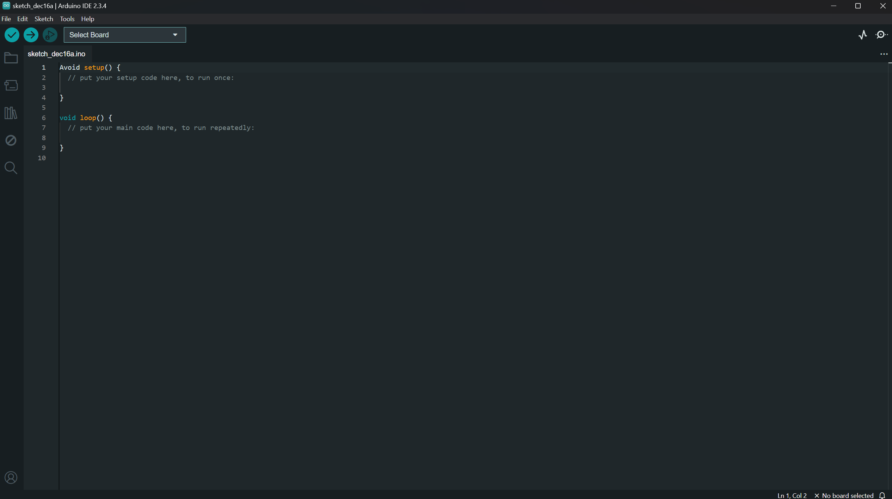
Select Your Board and COM Port
Navigate through the IDE menus to select your Arduino board model and the COM port it is connected to.
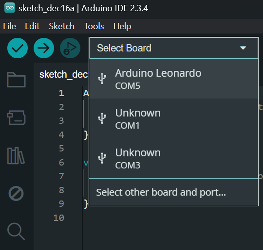
Note
The specific COM port (e.g., COM5) and board name (e.g., Keystudio Leonardo) will vary depending on your system and the Arduino board you are using.
Verify IDE Setup
Your Arduino IDE should now display the selected board and port, similar to the image below.
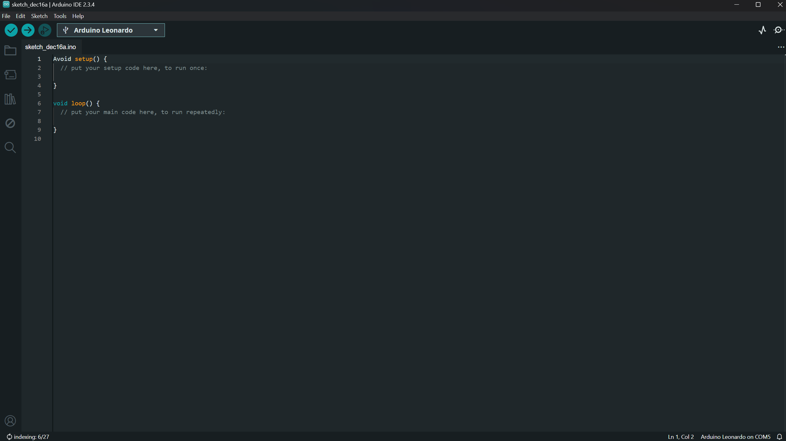
Download WibbleWobble Software
If you haven’t already, download the latest WibbleWobble Release from GitHub.
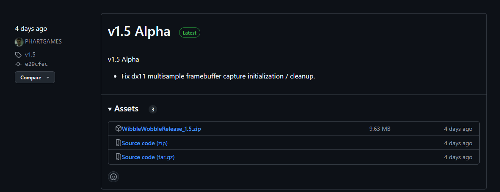
Note
The Patreon version of the WibbleWobble software offers additional features. This guide, however, focuses on the free version.
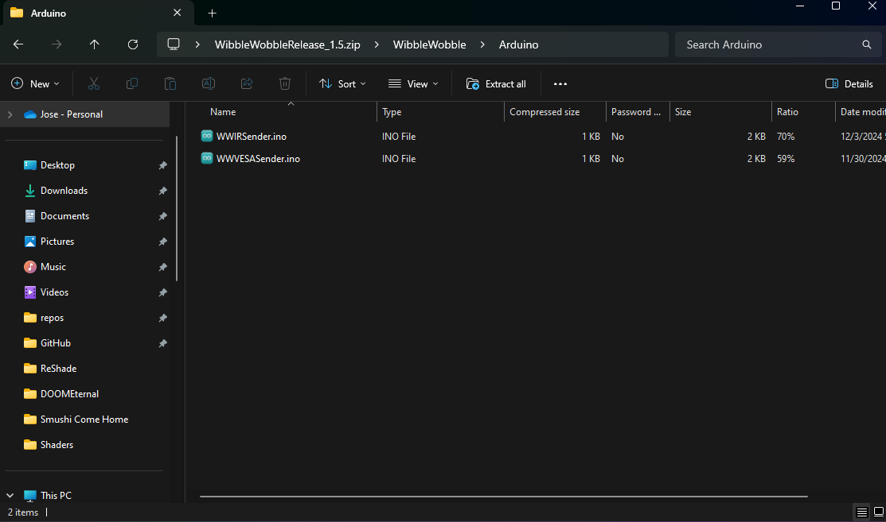
After extracting the downloaded files, you will find two or more files within the WibbleWobbleCore folder.
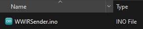
Locate and double-click the WWIRSender.ino file. This action will open the sketch directly within the Arduino IDE.
Ensure you have extracted all files from the downloaded archive before attempting to open the .ino file.